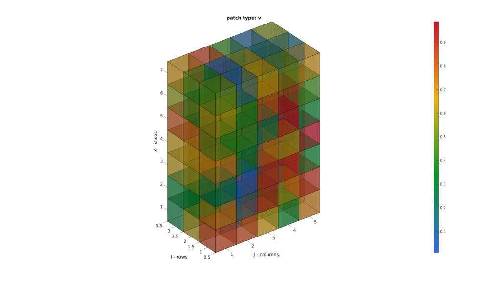
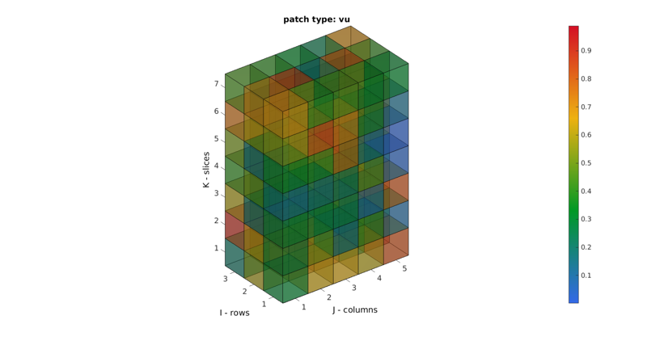
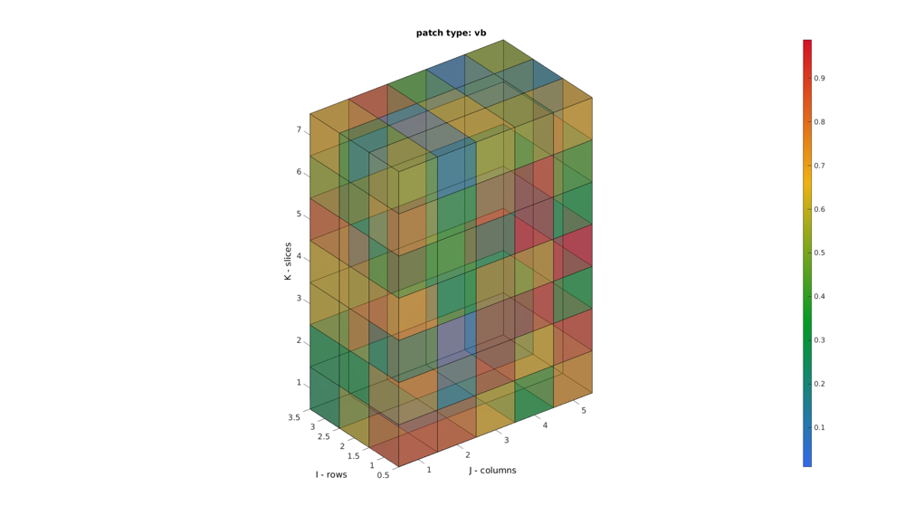
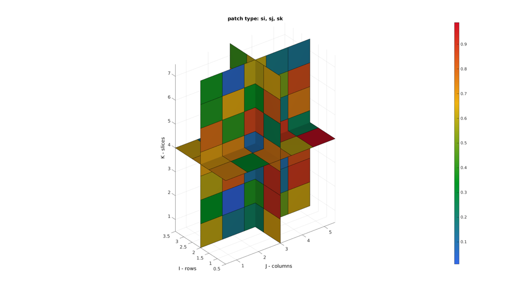
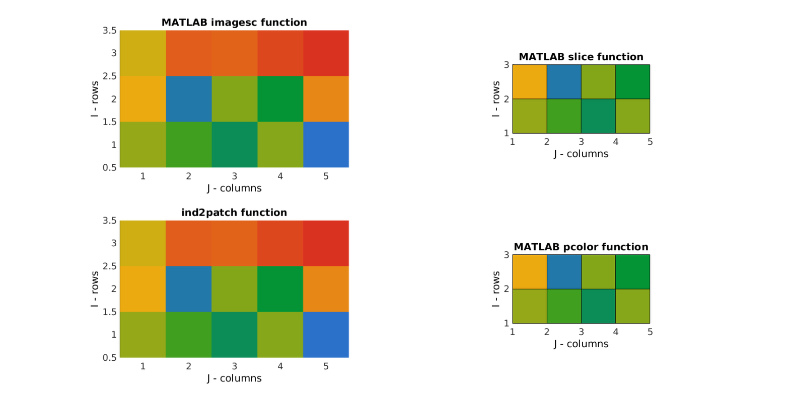
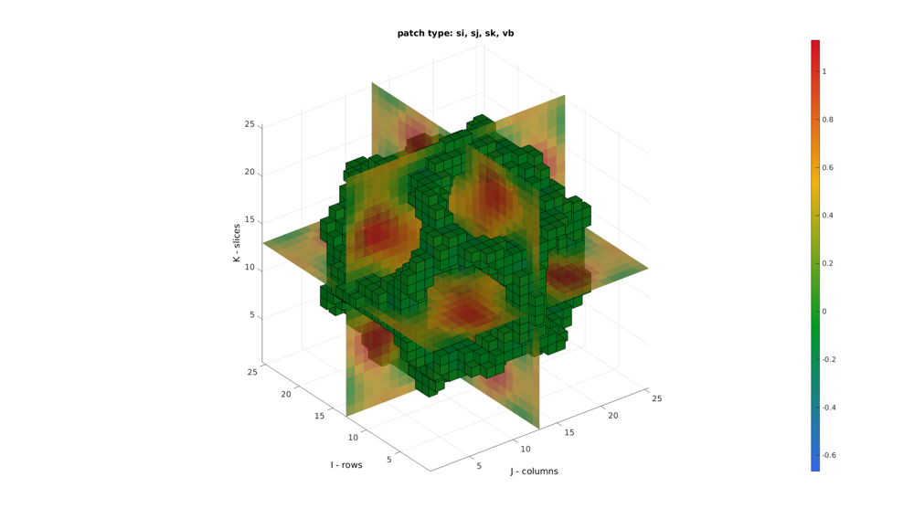
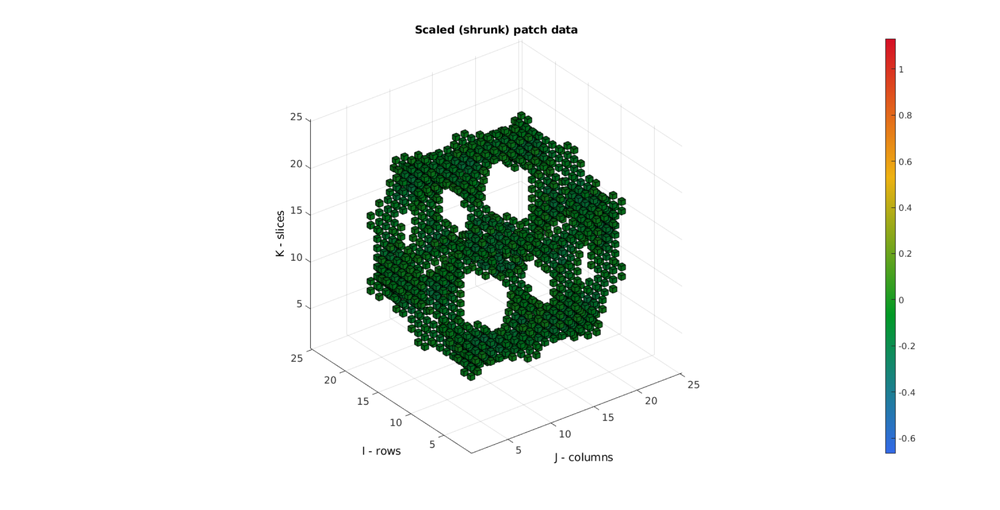
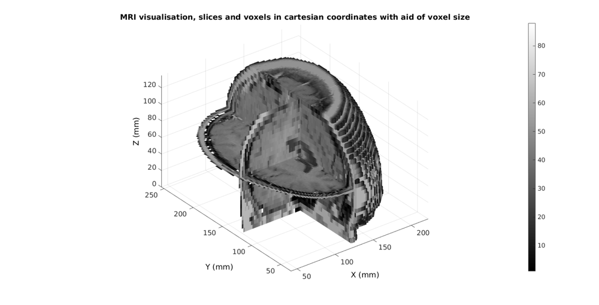

ind2patch
Below is a demonstration of the features of the ind2patch function
Contents
- Syntax
- Description
- Examples
- Example: Introduction to using ind2patch for voxel plotting
- Example: Introduction to using ind2patch for slice plotting
- Example: Comparison to standard MATLAB imagesc function and the patch type MATLAB functions slice and pcolor
- Example: Creating and plotting combined voxel and slice patch data
- Example: Shrinking patch data through combination with scalePatch function
- Example: Medical image data and coordinate manipulation due to voxel size
- Example: Combining colormap and RGB driven patch colours
clear; close all; clc;
Syntax
[F,V,C]=ind2patch(IND,M,ptype);
Description
This function generates patch data for 3D images. The patch data is only generated for the voxels specified by the indices (logic or linear indices). The patch data is created according to the patch type desired (e.g. voxel type of slice type).
Examples
Plot settings
cMap=gjet(250); faceAlpha1=1; faceAlpha2=0.65; edgeColor1='none'; edgeColor2='none'; fontSize=15;
Example: Introduction to using ind2patch for voxel plotting
The voxel for which patch data is to be specified can be defined by supplying linear indices or a logic array.
% Simulating an image M=rand(3,5,7); % Example supplying linear indices, here all voxels indPatch=1:numel(M);
Creating patch data for voxel display
[F,V,C]=ind2patch(indPatch,M,'v'); h1=cFigure; title('patch type: v'); xlabel('J - columns');ylabel('I - rows'); zlabel('K - slices'); hold on; patch('Faces',F,'Vertices',V,'FaceColor','flat','CData',C,'EdgeColor','k','FaceAlpha',0.5); axis equal; view(3); axis tight; axis vis3d; grid off; colormap(cMap); caxis([min(M(:)) max(M(:))]); colorbar; camlight headlight; set(gca,'fontSize',fontSize); drawnow;
Study the size of the face and vertex arrays to confirm that the patch type 'v' creates vertices and faces for each voxel. Shared vertices and faces are not removed. This option requires the most memory.
disp(num2str(size(F))); disp(num2str(size(V)));
630 4 2520 3
Creating patch data for voxel display with shared vertices and faces removed
[F,V,C]=ind2patch(indPatch,M,'vu'); h2=cFigure; title('patch type: vu'); xlabel('J - columns');ylabel('I - rows'); zlabel('K - slices'); hold on; patch('Faces',F,'Vertices',V,'FaceColor','flat','CData',C,'EdgeColor','k','FaceAlpha',0.5); axis equal; view(3); axis tight; axis vis3d; grid off; colormap(cMap); caxis([min(M(:)) max(M(:))]); colorbar; camlight headlight; set(gca,'fontSize',fontSize); drawnow;
Study the size of the face and vertex arrays to confirm that the patch type 'vu' ensures that shared faces and vertices are not shared. Each vertex and face is therefore unique. This saves memory with respect to using the 'v' patch type for voxel display. The figures look identical except that shared faces may appear less dark when transparency is on since now one one face is used. Color information is shared too (averaged).
disp(num2str(size(F))); disp(num2str(size(V)));
386 4 192 3
Creating patch data for voxel display with only non-shared faces and vertices
[F,V,C]=ind2patch(indPatch,M,'vb'); h3=cFigure; title('patch type: vb'); xlabel('J - columns');ylabel('I - rows'); zlabel('K - slices'); hold on; patch('Faces',F,'Vertices',V,'FaceColor','flat','CData',C,'EdgeColor','k','FaceAlpha',0.5); axis equal; view(3); axis tight; axis vis3d; grid off; colormap(cMap); caxis([min(M(:)) max(M(:))]); colorbar; camlight headlight; set(gca,'fontSize',fontSize); drawnow;
Study the size of the face and vertex arrays to confirm that the patch type 'vb' helps to plot only non-shared vertices and faces. In the case of an enclosed shape filled with voxels thus only the boundary faces are displayed. This path type appears no different than the other is transparency is not on however it is much lighter on memory than the above path types.
disp(num2str(size(F))); disp(num2str(size(V)));
142 4 144 3
Example: Introduction to using ind2patch for slice plotting
h4=cFigure; title('patch type: si, sj, sk'); xlabel('J - columns');ylabel('I - rows'); zlabel('K - slices'); hold on; %Setting up indices for I direction slices S=round(size(M,1)./2); %Selection of middle slice L_plot=false(size(M)); L_plot(S,:,:)=1; IND=find(L_plot); [F,V,C]=ind2patch(IND,M,'si'); %Creating patch data for y mid-voxel slices hs=patch('Faces',F,'Vertices',V,'EdgeColor','k', 'CData',C,'FaceColor','flat','FaceAlpha',1); %Setting up indices for J direction slices S=round(size(M,2)./2); %Selection of middle slice L_plot=false(size(M)); L_plot(:,S,:)=1; IND=find(L_plot); [F,V,C]=ind2patch(IND,M,'sj'); %Creating patch data for x mid-voxel slices hs=patch('Faces',F,'Vertices',V,'EdgeColor','k', 'CData',C,'FaceColor','flat','FaceAlpha',1); %Setting up indices for Z direction slices S=round(size(M,3)./2); %Selection of middle slice L_plot=false(size(M)); L_plot(:,:,S)=1; IND=find(L_plot); [F,V,C]=ind2patch(IND,M,'sk'); %Creating patch data for z mid-voxel slices hs=patch('Faces',F,'Vertices',V,'EdgeColor','k', 'CData',C,'FaceColor','flat','FaceAlpha',1); axis equal; view(3); axis tight; axis vis3d; grid on; colormap(cMap); caxis([min(M(:)) max(M(:))]); colorbar; camlight headlight; set(gca,'fontSize',fontSize); drawnow;
The path type s*u are simular to s* but use shared vertices
Example: Comparison to standard MATLAB imagesc function and the patch type MATLAB functions slice and pcolor
The comparison is what motivates the choice of coordinate system for ind2patch i.e. that it is meant to aid in the visualization of image data as is expected of image data.
h5=cFigure; subplot(2,2,1); title('MATLAB imagesc function'); xlabel('J - columns');ylabel('I - rows'); zlabel('K - slices'); hold on; imagesc(M(:,:,S)); axis equal; view(2); axis tight; axis vis3d; axis xy; grid on; colormap(cMap); caxis([min(M(:)) max(M(:))]); set(gca,'fontSize',fontSize); subplot(2,2,2); title('MATLAB slice function'); xlabel('J - columns');ylabel('I - rows'); zlabel('K - slices'); hold on; slice(M,[],[],S); axis equal; view(2); axis tight; axis vis3d; grid on; colormap(cMap); caxis([min(M(:)) max(M(:))]); set(gca,'fontSize',fontSize); subplot(2,2,4); title('MATLAB pcolor function'); xlabel('J - columns');ylabel('I - rows'); zlabel('K - slices'); hold on; pcolor(M(:,:,S)); axis equal; view(2); axis tight; axis vis3d; grid on; colormap(cMap); caxis([min(M(:)) max(M(:))]); set(gca,'fontSize',fontSize); subplot(2,2,3); title('ind2patch function'); xlabel('J - columns');ylabel('I - rows'); zlabel('K - slices'); hold on; hs=patch('Faces',F,'Vertices',V,'EdgeColor','none', 'CData',C,'FaceColor','flat','FaceAlpha',1); axis equal; view(2); axis tight; axis vis3d; grid on; colormap(cMap); caxis([min(M(:)) max(M(:))]); set(gca,'fontSize',fontSize); drawnow;
Note that the image size is wrong for the slice and pcolor commands. This is because intensities appear to be defined on voxels vertices (and are reinterpolated onto faces) for these functions instead of voxels centres as should be the case for image data.
Example: Creating and plotting combined voxel and slice patch data
Simulating 3D image
[X,Y,Z]=meshgrid(linspace(-4.77,4.77,25)); phi=(1+sqrt(5))/2; M=1/6*(2 - (cos(X + phi*Y) + cos(X - phi*Y) + cos(Y + phi*Z) + cos(Y - phi*Z) + cos(Z - phi*X) + cos(Z + phi*X)));
Creating and plotting patch data. Last example illustrates the use of a specific logic description (i.e. a mask) for the voxels of interest
h6=cFigure; title('patch type: si, sj, sk, vb'); xlabel('J - columns');ylabel('I - rows'); zlabel('K - slices'); hold on; % Setting up indices for I direction slices S=round(size(M,1)./2); %Selection of middle slice L_plot=false(size(M)); L_plot(S,:,:)=1; IND=find(L_plot); [F,V,C]=ind2patch(IND,M,'si'); %Creating patch data for y mid-voxel slices hs=patch('Faces',F,'Vertices',V,'EdgeColor','none', 'CData',C,'FaceColor','flat','FaceAlpha',0.75); % Setting up indices for J direction slices S=round(size(M,2)./2); %Selection of middle slice L_plot=false(size(M)); L_plot(:,S,:)=1; IND=find(L_plot); [F,V,C]=ind2patch(IND,M,'sj'); %Creating patch data for x mid-voxel slices hs=patch('Faces',F,'Vertices',V,'EdgeColor','none', 'CData',C,'FaceColor','flat','FaceAlpha',0.75); % Setting up indices for K direction slices S=round(size(M,3)./2); %Selection of middle slice L_plot=false(size(M)); L_plot(:,:,S)=1; IND=find(L_plot); [F,V,C]=ind2patch(IND,M,'sk'); %Creating patch data for z mid-voxel slices hs=patch('Faces',F,'Vertices',V,'EdgeColor','none', 'CData',C,'FaceColor','flat','FaceAlpha',0.75); % Setting up indices for voxels to plot L_mask=M>-0.2 & M<0; [F,V,C]=ind2patch(L_mask,M,'vb'); %Creating patch data for selection of high voxels hs=patch('Faces',F,'Vertices',V,'EdgeColor','k', 'CData',C,'FaceColor','flat','FaceAlpha',1); colormap(cMap); colorbar; caxis([min(M(:)) max(M(:))]); axis equal; view(3); axis tight; grid on; camlight headlight; set(gca,'fontSize',fontSize); drawnow;
Example: Shrinking patch data through combination with scalePatch function
% Using the function |scalePatch| patch data can be shrunk to aid % visualisation (can be a tool to avoid memory costly transparency for % instance). [Ev,Vv,Cv]=ind2patch(L_mask,M,'h'); %This creates a hexahedral element for each voxel [Evs,Vvs,Cvs]=scalePatch(Ev,Vv,Cv,0.5); %Apply voxel element scaling [Fvs,Cvs]=element2patch(Evs,Cvs); %Convert to quad faces for plotting
Plotting the voxels
h7=cFigure; title('Scaled (shrunk) patch data'); xlabel('J - columns');ylabel('I - rows'); zlabel('K - slices'); hold on; hp1= patch('Faces',Fvs,'Vertices',Vvs,'FaceColor','flat','CData',Cvs,'EdgeColor','k','FaceAlpha',faceAlpha1); axis equal; view(3); axis tight; axis vis3d; grid on; colormap(cMap); colorbar; caxis([min(M(:)) max(M(:))]); camlight headlight; set(gca,'fontSize',fontSize); drawnow;
Example: Medical image data and coordinate manipulation due to voxel size
% Get a 3D image load mri; M=squeeze(D); %example image data set v=2./[1,1,.4]; %example voxel size
The voxels to display can be specified as a list (vector) of voxels numbers (linear indices) or using a mask (logic array).
%Defining row, column and slice indicices for slice patching sliceIndexI=round(size(M,1)/2); %(close to) middle row sliceIndexJ=round(size(M,2)/2); %(close to) middle column sliceIndexK=round(size(M,3)/2); %(close to) middle slice %Defining "masks" i.e. logic arrays with ones for voxels of interest logicSliceI=false(size(M)); logicSliceI(sliceIndexI,:,:)=1; logicSliceI=logicSliceI & M>0; logicSliceJ=false(size(M)); logicSliceJ(:,sliceIndexJ,:)=1; logicSliceJ=logicSliceJ & M>0; logicSliceK=false(size(M)); logicSliceK(:,:,sliceIndexK)=1; logicSliceK=logicSliceK & M>0; %Defining voxel indices for voxels of interest T_low=min(M(:))+((max(M(:))-min(M(:)))/10); %Threshold example logicVoxels=(M>T_low); logicVoxels(:,1:sliceIndexJ,:)=0;
Creating patch data The patch data consists of a matrix array defining the faces, a matrix array defining the vertices and a vector for the colour data. The vertices are based on the image coordinates however they are formatted as: [X(:) Y(:) Z(:)]. X relates to columns, Y to rows and Z to slices. Use a function like im2cart , or im2mrcart to convert image to cartesian coordinates.
[Fv,Vv,Cv]=ind2patch(logicVoxels,M,'vb'); [Fx,Vx,Cx]=ind2patch(logicSliceJ,M,'sj'); [Fy,Vy,Cy]=ind2patch(logicSliceI,M,'si'); [Fz,Vz,Cz]=ind2patch(logicSliceK,M,'sk'); % Convert image coordinates to cartesian coordinates [Vv(:,1),Vv(:,2),Vv(:,3)]=im2cart(Vv(:,2),Vv(:,1),Vv(:,3),v); [Vx(:,1),Vx(:,2),Vx(:,3)]=im2cart(Vx(:,2),Vx(:,1),Vx(:,3),v); [Vy(:,1),Vy(:,2),Vy(:,3)]=im2cart(Vy(:,2),Vy(:,1),Vy(:,3),v); [Vz(:,1),Vz(:,2),Vz(:,3)]=im2cart(Vz(:,2),Vz(:,1),Vz(:,3),v); h8=cFigure; title('MRI visualisation, slices and voxels in cartesian coordinates with aid of voxel size'); xlabel('X (mm)');ylabel('Y (mm)'); zlabel('Z (mm)'); hold on; hp1= patch('Faces',Fv,'Vertices',Vv,'FaceColor','flat','CData',Cv,'EdgeColor',edgeColor1,'FaceAlpha',faceAlpha1); hp2= patch('Faces',Fx,'Vertices',Vx,'FaceColor','flat','CData',Cx,'EdgeColor',edgeColor2,'FaceAlpha',faceAlpha1); hp3= patch('Faces',Fy,'Vertices',Vy,'FaceColor','flat','CData',Cy,'EdgeColor',edgeColor2,'FaceAlpha',faceAlpha1); hp4= patch('Faces',Fz,'Vertices',Vz,'FaceColor','flat','CData',Cz,'EdgeColor',edgeColor2,'FaceAlpha',faceAlpha1); axis equal; view(3); axis tight; axis vis3d; grid on; colormap(gray(250)); colorbar; camlight headlight; set(gca,'fontSize',fontSize); drawnow;
Example: Combining colormap and RGB driven patch colours
N.B. The figure renderer might have to be set to OPENGL. This is the default renderer for the figuremax function
Convert voxels colouring to RGB type, here a simple conversion to a gray scale description is used
Cv=(Cv*ones(1,3))./max(Cv(:));
Plotting the voxels
h9=cFigure; title('MRI visualisation, slices and voxels, colormap and RGB driven respectively'); xlabel('X (mm)');ylabel('Y (mm)'); zlabel('Z (mm)'); hold on; hp1= patch('Faces',Fv,'Vertices',Vv,'FaceColor','flat','FaceVertexCData',Cv,'EdgeColor',edgeColor1,'FaceAlpha',faceAlpha2); hp2= patch('Faces',Fx,'Vertices',Vx,'FaceColor','flat','CData',Cx,'EdgeColor',edgeColor2,'FaceAlpha',faceAlpha1); hp3= patch('Faces',Fy,'Vertices',Vy,'FaceColor','flat','CData',Cy,'EdgeColor',edgeColor2,'FaceAlpha',faceAlpha1); hp4= patch('Faces',Fz,'Vertices',Vz,'FaceColor','flat','CData',Cz,'EdgeColor',edgeColor2,'FaceAlpha',faceAlpha1); axis equal; view(3); axis tight; axis vis3d; grid on; colormap(cMap); colorbar; camlight headlight; set(gca,'fontSize',fontSize); drawnow;


GIBBON www.gibboncode.org
Kevin Mattheus Moerman, gibbon.toolbox@gmail.com
GIBBON footer text
License: https://github.com/gibbonCode/GIBBON/blob/master/LICENSE
GIBBON: The Geometry and Image-based Bioengineering add-On. A toolbox for image segmentation, image-based modeling, meshing, and finite element analysis.
Copyright (C) 2017 Kevin Mattheus Moerman
This program is free software: you can redistribute it and/or modify it under the terms of the GNU General Public License as published by the Free Software Foundation, either version 3 of the License, or (at your option) any later version.
This program is distributed in the hope that it will be useful, but WITHOUT ANY WARRANTY; without even the implied warranty of MERCHANTABILITY or FITNESS FOR A PARTICULAR PURPOSE. See the GNU General Public License for more details.
You should have received a copy of the GNU General Public License along with this program. If not, see http://www.gnu.org/licenses/.